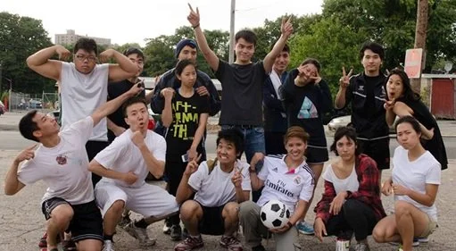
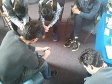

青年事工
Youth
裝備青年活出信仰
Equipping young people to live out their faith
青年事工
Youth
幫助青少年在學校、家庭和社會中活出信仰，建立與神和肢體的深厚關係。
Equipping teenagers to live out their faith at school, at home, and in their community while building deep relationships.


生命團契
L.I.F.E. Fellowship
「LIFE」縮寫代表「在信仰與鼓勵中生活」（Living in Faith and Encouragement），是前身為大專青年團契（CYAF）的延伸。這是一個匯聚大學生及年輕專業人士的團體。
The acronym LIFE – stands for Living in Faith and Encouragement – is the former CYAF (College and Young Adult Fellowship). This is a gathering of college and university students together with young professionals.
團契每月聚會兩次——每月第二及第四個星期五，晚上7:30至9:00。第二個星期五在預先安排的家庭聚會，第四個星期五則在教會聚會。
The group meets twice a month – the 2nd and 4th Fridays from 7:30 pm–9:00 pm. The 2nd Friday meets at a prearranged home venue while the 4th Friday meets at the church.
聯絡我們
Get in touch & connect:
📧 電郵 Vivian Chen：
如需進一步資訊，請聯絡 Enoch Pang。
Contact Enoch Pang for further information.
📘 Facebook：
有興趣參與或了解更多？
Interested in getting involved or learning more?
✉️ 聯絡我們 Contact Us ← 返回事工 Back to MinistriesJoin Us Online
無法親自出席？線上觀看直播或隨時收看錄影。
Can't make it in person? Watch our services live or access recordings anytime.